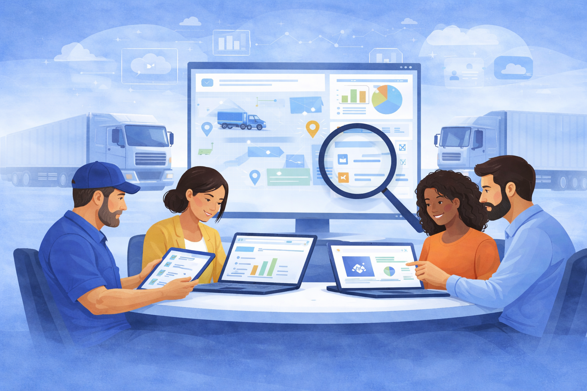
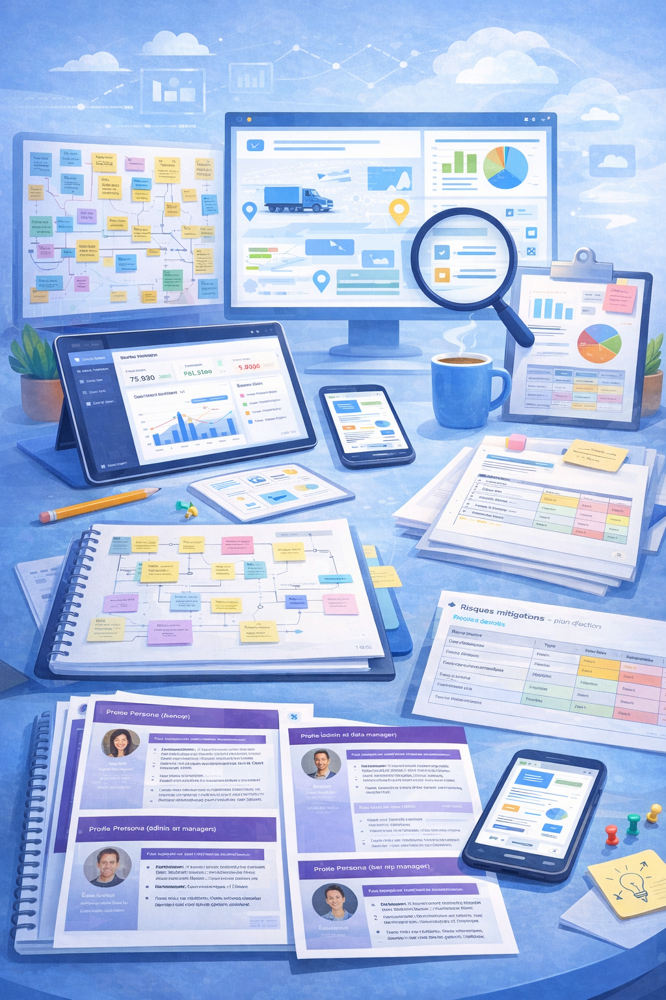
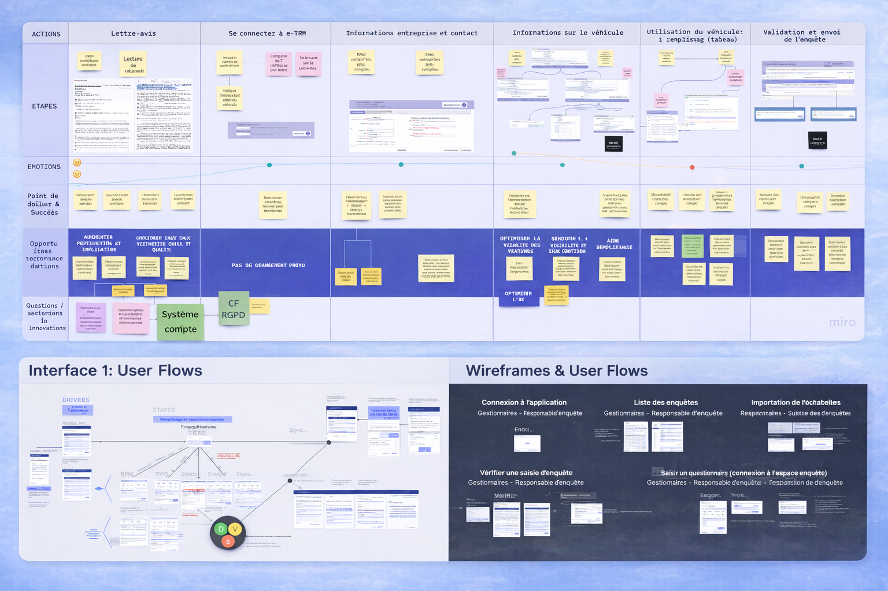

Étude de cas
Refonte du produit data TRM — Transport routier de marchandises (Ministère Écologique)
Conception et cadrage d’un produit data destiné à améliorer la collecte et la gestion des données sur le transport routier de marchandises. Le projet visait à moderniser l’outil existant, fiabiliser les données collectées et simplifier l’expérience des chauffeurs et des gestionnaires.

Contexte
L’outil existant de collecte de données sur le transport routier de marchandises présentait plusieurs limites, à la fois pour les chauffeurs amenés à renseigner les enquêtes terrain et pour les gestionnaires chargés de vérifier, manipuler et partager les données collectées.
Le projet visait à repenser ce produit de manière plus globale, en travaillant à la fois sur les parcours, la structure de l’information, les besoins utilisateurs et la préparation d’une future mise en développement. L’ambition était de poser des bases solides pour un outil plus fiable, plus simple à utiliser et mieux adapté aux réalités métier.
Problème
L’application actuelle ne permettait pas de fluidifier ni de sécuriser correctement le processus de collecte de données sur le transport de marchandises. Les chauffeurs devaient remplir manuellement un questionnaire sur les poids lourds, ce qui générait régulièrement des erreurs de saisie.
De leur côté, les gestionnaires de données rencontraient des difficultés pour vérifier, exploiter, manipuler et partager les informations efficacement. Cela entraînait une baisse de qualité des données, des incohérences et une utilisation moins fiable des informations collectées.
Objectifs
- Moderniser l’outil existant de collecte et de gestion des données.
- Réduire les erreurs de saisie et améliorer la fiabilité des données collectées.
- Concevoir une expérience plus fluide pour les chauffeurs dans l’espace enquête.
- Améliorer l’espace de gestion de données pour faciliter la vérification, la manipulation et le partage.
- Préparer une base produit claire, cohérente et exploitable pour le développement futur.
Recherche
Pour comprendre les enjeux du produit et cadrer la refonte, j’ai mené un travail de recherche et d’analyse sur l’existant, en croisant données disponibles, documentation, entretiens et ateliers avec les parties prenantes.
Méthodes utilisées
- Analyse de l’écosystème existant et des parcours actuels
- Ateliers de vision et échanges avec les parties prenantes métier
- Analyse de données existantes, rapports et anciens entretiens
- Entretiens utilisateurs complémentaires avec chauffeurs et gestionnaires de données
- Prise en compte des contraintes réglementaires françaises et européennes
- Formalisation des besoins utilisateurs, irritants et opportunités produit

Principaux enseignements
- Le produit existant souffrait d’une forte complexité liée à l’écosystème, aux usages terrain et aux contraintes réglementaires.
- Les chauffeurs et les gestionnaires n’avaient pas les mêmes besoins, ce qui impliquait de concevoir deux expériences distinctes mais cohérentes.
- Les données déjà disponibles et les anciens entretiens ont permis d’identifier rapidement plusieurs problèmes de qualité, d’usage et de compréhension.
- Les entretiens complémentaires ont confirmé l’existence de pain points quotidiens, notamment du côté des gestionnaires de données.
- Le besoin n’était pas seulement de refondre des écrans, mais de clarifier la structure du produit, les parcours et les priorités de développement.
Solution
À partir de cette phase de recherche, j’ai structuré une proposition de produit centrée utilisateur, en travaillant à la fois sur la compréhension des profils, l’architecture fonctionnelle, les parcours et des prototypes haute fidélité pour les futures interfaces.
Ce que j’ai proposé
- Définition de personas représentant les principaux profils utilisateurs.
- Création d’une experience map, d’un user journey et d’une architecture de l’information.
- Conception de prototypes haute fidélité pour l’interface chauffeurs et l’interface gestionnaires.
- Organisation de sessions de tests utilisateurs pour recueillir des retours concrets sur les parcours proposés.
- Itérations de design à partir des feedbacks recueillis.
- Préparation d’une roadmap de livraison et d’un backlog structuré pour faciliter le passage au développement.
Pourquoi
Le projet ne consistait pas seulement à produire une nouvelle interface, mais à poser un cadre produit robuste pour un futur développement. Il fallait à la fois mieux comprendre les besoins utilisateurs, rendre le système plus lisible et fiabiliser les futures décisions produit.
Cette démarche a permis de transformer un sujet complexe en une vision plus claire, articulée autour d’interfaces concrètes, d’un plan de livraison réaliste et d’une meilleure prise en compte des risques, des dépendances et des priorités.

Résultats de la mission
La mission a permis de cadrer la refonte du produit de manière structurée, de produire une vision claire pour la suite du projet et de fournir des livrables concrets pour orienter la mise en développement.
Mon rôle
Sur ce projet, j’ai porté à la fois les dimensions de product design, de recherche utilisateur et de cadrage stratégique, en collaboration avec un développeur sur les enjeux techniques et avec les équipes métier comme parties prenantes principales.
- Pilotage du parcours utilisateur et de la vision produit
- Recherche utilisateur et analyse de données existantes
- Animation d’ateliers et gestion des échanges avec les parties prenantes
- Conception UX-UI et formalisation des parcours
- Organisation des tests utilisateurs et itérations de design
- Évaluation des risques, préparation du backlog et roadmap de livraison